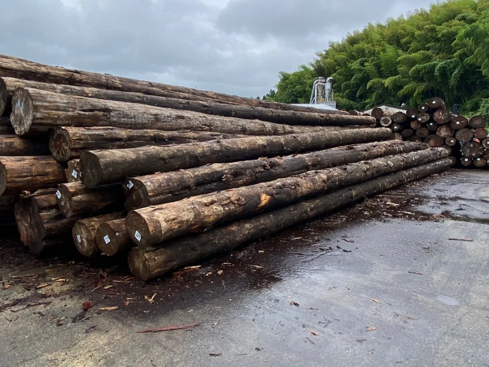
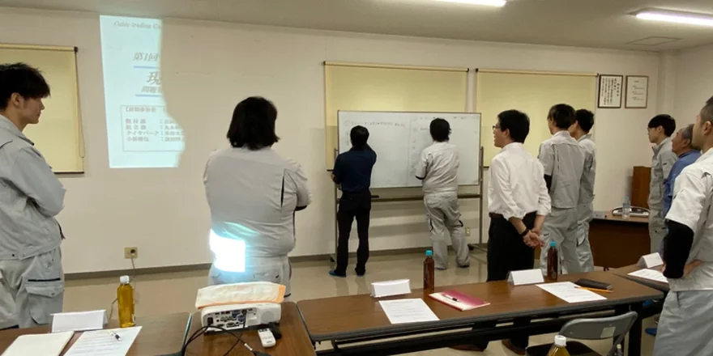
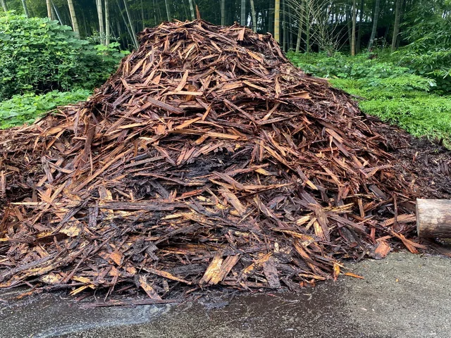
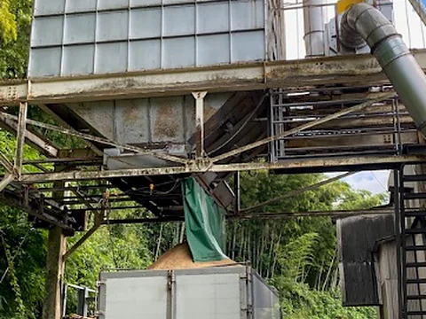
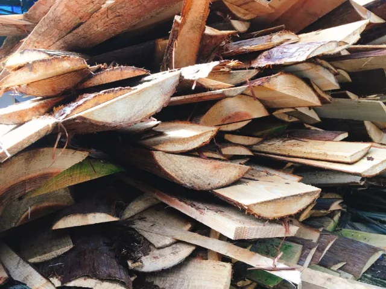
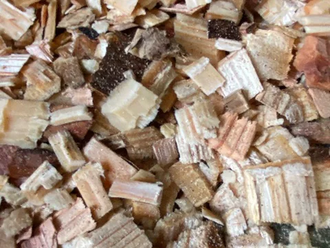
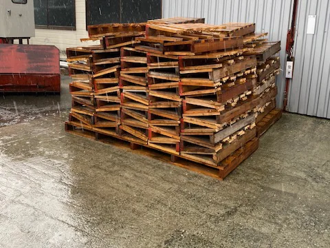
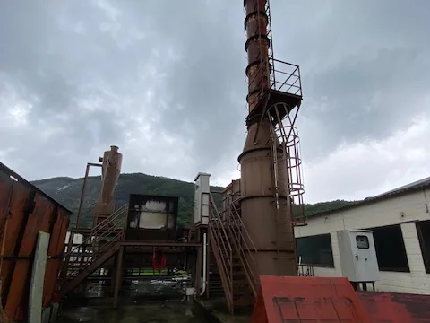
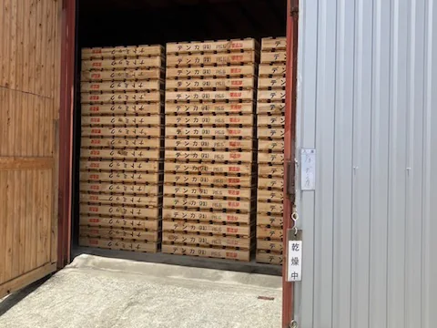

安全ルールブック
延べ0ページ
ルールブックを作成し、安全への意識を高めています。共通の項目、課ごとの項目、フローなどに細かく分け、各部署に配備。いつでも確認できる状態を整えています。
新入社員研修のときや、ルールブックを改定したときには、内容の説明と確認を行っています。
SAFETY & ENVIRONMENT
安全は、すべてに優先する。
社員が安心して働ける職場づくりと、製材で出る木の皮や端材まで無駄にしない取り組みを続けています。

SAFETY FIRST
フォレストの安全の基本となる、5つの原則です。
RULES & EDUCATION
安全ルールブック
延べ0ページ
ルールブックを作成し、安全への意識を高めています。共通の項目、課ごとの項目、フローなどに細かく分け、各部署に配備。いつでも確認できる状態を整えています。
新入社員研修のときや、ルールブックを改定したときには、内容の説明と確認を行っています。

新人研修で、心と体の安全や、機械の取り扱いなどについて教育を行っています。
HEATSTROKE PREVENTION
近年の猛暑で、作業環境の熱中症リスクは高まっています。フォレストでは予防対策を年々強化し、安全な職場環境づくりに取り組んでいます。
スポットクーラー
WBGT計測器暑さ指数を職場ごとに確認
空調服の費用を会社が負担希望者
フローズン機械を設置2026年からリース
ENVIRONMENT
製材の過程では、木の皮や鋸くず、使えない板が出ます。木材事業部では、これらを捨てずに次の使い道へつないでいます。

バーク堆肥へ

肥料へ
牛の寝床に


紙の原料へ


